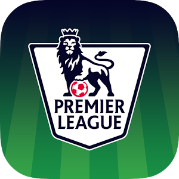

Some links and useful information about Premier League!
Interesting links you should check:
Click on the ball to see Premier League results!
Information about Premier League (source)
The Premier League is an English professional league for men's association football clubs. At the top of the English football league system, it is the country's primary football competition. Contested by 20 clubs, it operates on a system of promotion and relegation with the English Football League (EFL; known as "The Football League" before 2016–17). Welsh clubs that compete in the English football league system can also qualify.
The Premier League is a corporation in which the 20 member clubs act as shareholders. Seasons run from August to May. Teams play 38 matches each (playing each team in the league twice, home and away), totalling 380 matches in the season. Most games are played on Saturday and Sunday afternoons; others during weekday evenings. It is colloquially known as the Premiership and outside the UK it is commonly referred to as the English Premier League (EPL).
The competition formed as the FA Premier League on 20 February 1992 following the decision of clubs in the Football League First Division to break away from the Football League, which was founded in 1888, and take advantage of a lucrative television rights deal. The deal was worth £1 billion a year domestically as of 2013–14, with BSkyB and BT Group securing the domestic rights to broadcast 116 and 38 games respectively. The league generates €2.2 billion per year in domestic and international television rights. In 2014–15, teams were apportioned revenues of £1,600 million, rising sharply to £2,400 million in 2016–17.
The Premier League is the most-watched sports league in the world, broadcast in 212 territories to 643 million homes and a potential TV audience of 4.7 billion people. In the 2014–15 season, the average Premier League match attendance exceeded 36,000, second highest of any professional football league behind the Bundesliga's 43,500. Most stadium occupancies are near capacity. The Premier League ranks third in the UEFA coefficients of leagues based on performances in European competitions over the past five seasons.
In total, 49 clubs have competed since the inception of the Premier League in 1992. Six of them have won the title: Manchester United (13), Chelsea (5), Arsenal (3), Manchester City (2), Blackburn Rovers (1) and Leicester City (1).